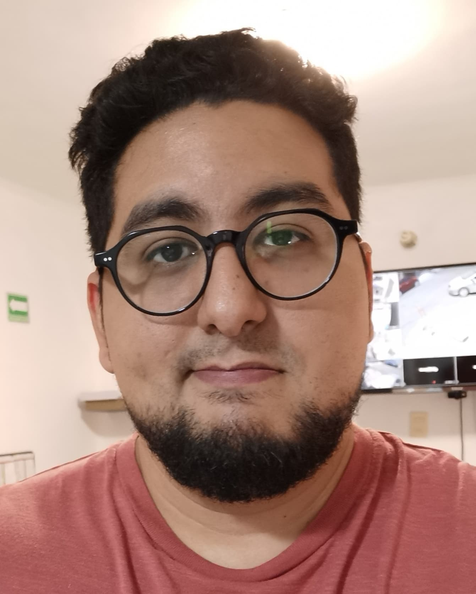

Saúl Saavedra Villarreal

- Originario de: Veracruz,Ver
- Residencia actual: CDMX
- Edad: 28 años
Soy una persona agradable y de fácil trato, favorezco el trabajo en equipo y se liderar y armar equipos de
trabajo.
Objetivos laborales: Establecer una relación de crecimiento mutuo dentro de la empresa donde mis conocimientos y
destrezas personales puedan desarrollarse y al mismo tiempo estas puedan a yudar a crecer a oros
Competencias
- Manejo de grupos
- Desarrollo de personal operativo
- Desarrollo de departamentos relacionados a calidad, gestión de recursos, logistica, calidad y similares
- Establecimiento de nexos de comunicación entre áreas de gestión yproducción
Educacion
licenciatura en ingeniería biológica - UAM Cuajimalpa (2011-2016)
Diplomado en desarrollo de tecnologias limpias en procesos petroleros - UiB (2016-2017)
Experiencia profesional
CEMGI S.A. de C.V. - Consultor Jr. (2017-2018)
MADEA cereales - Jefe de control de calidad (2018- presente)
Intereses